Talking about the Delicacy & Sentimental Food in all parts of Cebu
March 11, 2026
CEBU is an island that speaks through its kitchen. From the moment the first Spanish ships landed on our shores to the modern, bustling economy today our identity has been simmered, grilled, and roasted into every local dishes. We knew there was a deeper story to tell, one that spans across all 53 cities and municipalities of this vibrant province. Its not just begin and ends with a plate of lechon, it's more way deeper and more meaningful that open our hearts and soul through discovering behind those dishes.
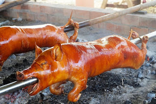
The Heart of the Metro: Where Tradition Meets the City
Our journey begins in the urban heart of the Visayas. In Cebu City and Mandaue, the culinary scene moves quickly but remains tied to its tradition. You cannot speak of Cebu without mentioning Lechon. While roasting pig is common across the Philippines, the Cebuano method is unique. The secret lies in the belly stuffing a fragrant mix of lemongrass (cymbopogon), spring onions, garlic, and secret local spices that season the meat from the inside out. This removes the need for liver sauce, a point of pride for any local.
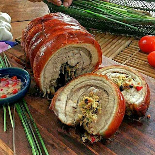
Cordova is famous for Bakasi (moray eel). It is served as Linarang, a sour and spicy stew that represents the coastal heritage of the Mactan Channel.
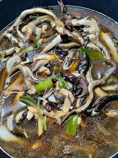
Liloan: No trip to the North is complete without Titay’s Rosquillos. These ring-shaped cookies have been around since 1907. They are baked to a perfect golden crunch and they pairs really well with local coffee.
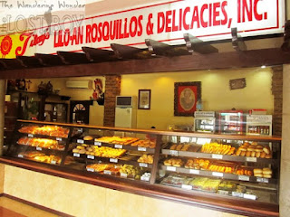
Catmon: In this town, we discovered Budbud Kabog. It is different from the usual sticky rice cakes because it use millet seeds (kabog). This give the snack a distinct, earthy texture and a bright yellow color that you won't find anywhere else in Cebu.
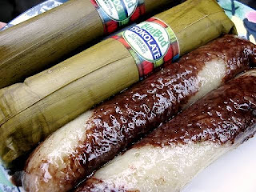
Daanbantayan & Medellin:At the very "Tip of the North," the focus is back on the sea. The markets here are famous for Scallops and high-quality Danggit. Because of the strong northern sun and the salt air, the dried fish here has a legendary crispness. It's a favorite breakfast for people all over the country.
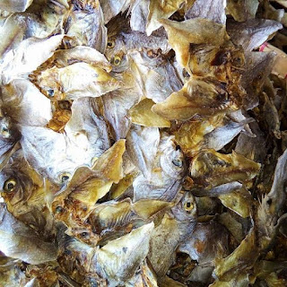
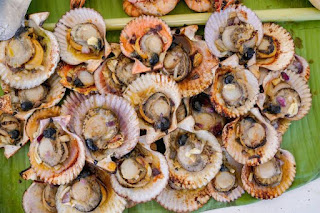
South part of Cebu, the mountainous part
The South of Cebu feels like a step back in time. Here, Spanish-era stone churches overlook bustling public markets filled with inherited recipes passed down through generations.
Carcar offers chicharon, lechon, and ampao.
Carcar City: Known as the heritage capital, Carcar offers the "Holy Trinity" of snacks: Chicharon (with that perfect, sinful layer of backfat), Lechon, and Ampao (sweet puffed rice cakes). The Carcar public market is a sensory overload of crackling skins and sweet aromas.
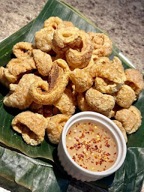
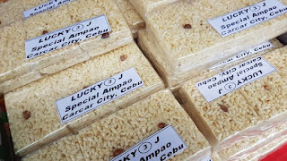
Argao is known for its Torta and Sikwate.
Argao: This town is famous for its Torta, a soft, sweet cake that is often enjoyed with Sikwate, a rich hot chocolate made from local cacao. The combination of the two is a beloved afternoon treat that captures the essence of Cebu's culinary heritage.
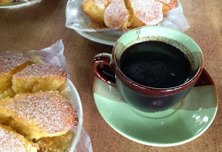
Dalaguete is known for Utan Bisaya, a fresh vegetable soup.
Dalaguete: Known as the "Vegetable Basket of Cebu," Dalaguete is famous for Utan Bisaya, a fresh vegetable soup that highlights the bounty of the region. Made with a variety of local greens, squash, and sometimes seafood, this dish is a comforting reminder of the simple pleasures of Cebu's countryside.
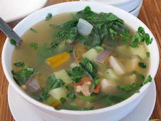
Across the central mountain range to the West and out into the surrounding islands, the food becomes even more localized and resourceful.
Balamban: This town is for sure the home of the best Liempo. They stuff the pork belly with a lot of ginger and local herbs, and now, this style has influenced grill stations from Manila all the way to Davao.
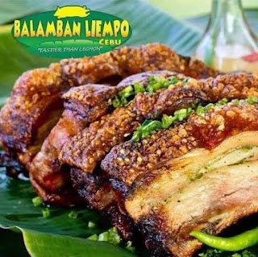
Camotes Islands: In Camotes, it is all about the root crops. Their Cassava cookies and sweet potato treats show how the locals adapted to their environment. These sweets were actually made to last for long boat trips across the sea.
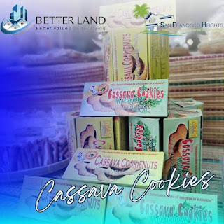